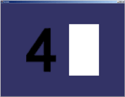

Nested external references are working!
Note: To get links to work, download the testdb_flt.zip and open index.html locally.
This test use more nesting levels and it also tests textures referenced at different levels. Open the 1234.flt file in osgviewer.
If the result is like this,

, then nested external references are not working!
The correct result should look like this:
Nested external references are working!